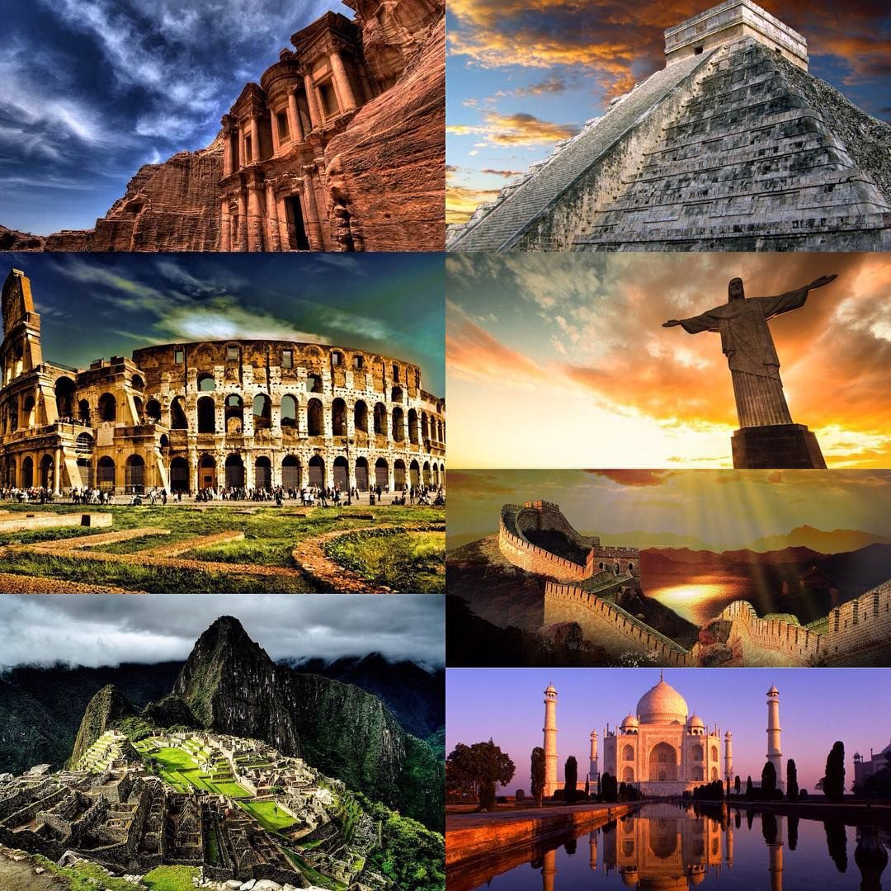

Современные 7 чудес света

Современные 7 чудес света - это выдающиеся памятники архитектуры и инженерного искусства, выбранные всемирным голосованием в 2007 году. Знание этих мест важно для понимания культурного наследия человечества, развития кругозора и осознания масштаба созидательных способностей людей разных эпох, от античности до возрождения